| Id |
Name |
Val |
Voronoi (12 pontos) |
| 107 | jellyfish | 0.999767 | |
| 96 | toucan | 0.997482 | |
| 354 | Arabian camel, dromedary, Camelus dromedarius | 0.996658 | |
| 145 | king penguin, Aptenodytes patagonica | 0.99559 | |
| 150 | sea lion | 0.976184 | |
| 148 | killer whale, killer, orca, grampus, sea wolf, Orcinus orca | 0.971336 | |
| 327 | starfish, sea star | 0.947783 | |
| 4 | hammerhead, hammerhead shark | 0.895979 | |
| 90 | lorikeet | 0.891469 | |
| 325 | sulphur butterfly, sulfur butterfly | 0.889199 | |
| 6 | stingray | 0.866381 | |
| 5 | electric ray, crampfish, numbfish, torpedo | 0.806649 | |
| 99 | goose | 0.792539 | |
| 84 | peacock | 0.764479 | |
| 91 | coucal | 0.762404 | |
| 94 | hummingbird | 0.754246 | |
| 113 | snail | 0.748023 | |
| 1 | goldfish, Carassius auratus | 0.722774 | |
| 97 | drake | 0.709774 | |
| 71 | scorpion | 0.68728 | |
| 223 | schipperke | 0.681253 | |
| 18 | magpie | 0.658663 | |
| 117 | chambered nautilus, pearly nautilus, nautilus | 0.634539 | |
| 11 | goldfinch, Carduelis carduelis | 0.584872 |  |
| 326 | lycaenid, lycaenid butterfly | 0.574723 | |
| 137 | American coot, marsh hen, mud hen, water hen, Fulica americana | 0.553044 | |
| 81 | ptarmigan | 0.530201 | |
| 134 | crane | 0.513804 | |
| 225 | malinois | 0.503739 | |
| 3 | tiger shark, Galeocerdo cuvieri | 0.482286 | |
| 338 | guinea pig, Cavia cobaya | 0.475925 | |
| 146 | albatross, mollymawk | 0.437485 | |
| 183 | Kerry blue terrier | 0.433561 | |
| 111 | nematode, nematode worm, roundworm | 0.418306 | |
| 328 | sea urchin | 0.417415 | |
| 16 | bulbul | 0.409989 | |
| 7 | cock | 0.405202 | |
| 136 | European gallinule, Porphyrio porphyrio | 0.402417 | |
| 14 | indigo bunting, indigo finch, indigo bird, Passerina cyanea | 0.370502 |  |
| 33 | loggerhead, loggerhead turtle, Caretta caretta | 0.367099 | |
| 165 | black-and-tan coonhound | 0.348772 | |
| 100 | black swan, Cygnus atratus | 0.324132 | |
| 89 | sulphur-crested cockatoo, Kakatoe galerita, Cacatua galerita | 0.311086 | |
| 95 | jacamar | 0.301105 | |
| 347 | bison | 0.285887 | |
| 143 | oystercatcher, oyster catcher | 0.277178 | |
| 22 | bald eagle, American eagle, Haliaeetus leucocephalus | 0.270061 | |
| 2 | great white shark, white shark, man-eater, man-eating shark, Carcharodon carcharias | 0.261816 | |
| 149 | dugong, Dugong dugon | 0.242254 | |
| 101 | tusker | 0.239291 | |
| 147 | grey whale, gray whale, devilfish, Eschrichtius gibbosus, Eschrichtius robustus | 0.233301 | |
| 253 | basenji | 0.22979 | |
| 51 | triceratops | 0.204464 | |
| 203 | West Highland white terrier | 0.202238 | |
| 93 | hornbill | 0.200469 | |
| 21 | kite | 0.194254 | |
| 285 | Egyptian cat | 0.186907 | |
| 59 | vine snake | 0.179154 | |
| 344 | hippopotamus, hippo, river horse, Hippopotamus amphibius | 0.174263 | |
| 112 | conch | 0.168233 |  |
| 80 | black grouse | 0.165435 | |
| 88 | macaw | 0.163814 | 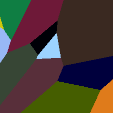 |
| 329 | sea cucumber, holothurian | 0.156098 |  |
| 246 | Great Dane | 0.154882 | |
| 64 | green mamba | 0.15383 | |
| 266 | miniature poodle | 0.148389 | |
| 109 | brain coral | 0.146508 | |
| 309 | bee | 0.144853 | |
| 38 | banded gecko | 0.143198 | |
| 364 | three-toed sloth, ai, Bradypus tridactylus | 0.137799 | |
| 236 | Doberman, Doberman pinscher | 0.134387 | 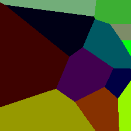 |
| 320 | damselfly | 0.129636 | |
| 132 | American egret, great white heron, Egretta albus | 0.129421 | |
| 65 | sea snake | 0.123788 | |
| 267 | standard poodle | 0.123607 | |
| 158 | toy terrier | 0.119688 | |
| 85 | quail | 0.117215 | |
| 224 | groenendael | 0.111861 | 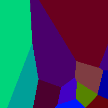 |
| 317 | leafhopper | 0.111131 | |
| 213 | Irish setter, red setter | 0.109318 | |
| 31 | tree frog, tree-frog | 0.108468 | |
| 197 | giant schnauzer | 0.108356 | |
| 208 | Labrador retriever | 0.10298 | |
| 214 | Gordon setter | 0.102499 | |
| 333 | hamster | 0.100317 | |
| 55 | green snake, grass snake | 0.0997898 | |
| 237 | miniature pinscher | 0.0960633 | |
| 346 | water buffalo, water ox, Asiatic buffalo, Bubalus bubalis | 0.0954781 | |
| 69 | trilobite | 0.0941206 | |
| 206 | curly-coated retriever | 0.0869793 | |
| 46 | green lizard, Lacerta viridis | 0.0862857 | |
| 23 | vulture | 0.0861261 | |
| 321 | admiral | 0.0825347 | |
| 179 | Staffordshire bullterrier, Staffordshire bull terrier | 0.0824814 | |
| 268 | Mexican hairless | 0.0808941 | |
| 286 | cougar, puma, catamount, mountain lion, painter, panther, Felis concolor | 0.0805764 | |
| 13 | junco, snowbird | 0.0792166 | |
| 245 | French bulldog | 0.0743701 | |
| 82 | ruffed grouse, partridge, Bonasa umbellus | 0.0726096 | 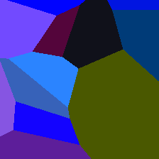 |
| 199 | Scotch terrier, Scottish terrier, Scottie | 0.0705607 | |
| 343 | warthog | 0.0699942 | |
| 15 | robin, American robin, Turdus migratorius | 0.0695719 | |
| 108 | sea anemone, anemone | 0.065663 | |
| 205 | flat-coated retriever | 0.0646401 | |
| 339 | sorrel | 0.0644571 | |
| 129 | spoonbill | 0.0636009 | |
| 311 | grasshopper, hopper | 0.0633871 | |
| 195 | Boston bull, Boston terrier | 0.0631437 | |
| 312 | cricket | 0.0615076 | |
| 92 | bee eater | 0.0614731 | |
| 313 | walking stick, walkingstick, stick insect | 0.0601249 | |
| 351 | hartebeest | 0.0599349 | |
| 252 | affenpinscher, monkey pinscher, monkey dog | 0.0576742 | 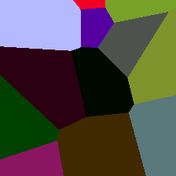 |
| 17 | jay | 0.056603 | |
| 234 | Rottweiler | 0.056214 | |
| 300 | tiger beetle | 0.0558324 | |
| 177 | Scottish deerhound, deerhound | 0.0557751 | |
| 34 | leatherback turtle, leatherback, leathery turtle, Dermochelys coriacea | 0.0537318 | |
| 160 | Afghan hound, Afghan | 0.0536847 | |
| 190 | Sealyham terrier, Sealyham | 0.0506328 | |
| 135 | limpkin, Aramus pictus | 0.0501615 | |
| 221 | Irish water spaniel | 0.0471573 | |
| 110 | flatworm, platyhelminth | 0.0468835 | |
| 176 | Saluki, gazelle hound | 0.0455147 | 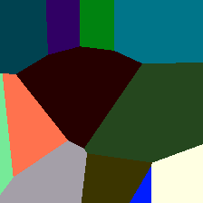 |
| 233 | Bouvier des Flandres, Bouviers des Flandres | 0.0438914 | |
| 304 | leaf beetle, chrysomelid | 0.0415181 | |
| 114 | slug | 0.0414915 | |
| 141 | redshank, Tringa totanus | 0.0407415 |  |
| 128 | black stork, Ciconia nigra | 0.0403793 | |
| 12 | house finch, linnet, Carpodacus mexicanus | 0.0394185 | |
| 303 | long-horned beetle, longicorn, longicorn beetle | 0.0384767 | |
| 296 | ice bear, polar bear, Ursus Maritimus, Thalarctos maritimus | 0.0352166 | |
| 323 | monarch, monarch butterfly, milkweed butterfly, Danaus plexippus | 0.0337705 | |
| 198 | standard schnauzer | 0.0337534 | |
| 341 | hog, pig, grunter, squealer, Sus scrofa | 0.0334694 | 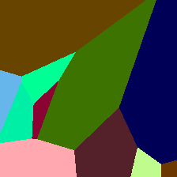 |
| 151 | Chihuahua | 0.0334036 | |
| 178 | Weimaraner | 0.0331802 | |
| 127 | white stork, Ciconia ciconia | 0.0324018 | |
| 324 | cabbage butterfly | 0.0323857 | |
| 357 | mink | 0.0322599 |  |
| 361 | skunk, polecat, wood pussy | 0.0320063 | |
| 240 | Appenzeller | 0.0314108 | |
| 307 | weevil | 0.0312991 | |
| 256 | Newfoundland, Newfoundland dog | 0.0300498 | |
| 19 | chickadee | 0.0296884 | |
| 315 | mantis, mantid | 0.0284137 | |
| 262 | Brabancon griffon | 0.0277689 | |
| 75 | black widow, Latrodectus mactans | 0.0270773 | |
| 209 | Chesapeake Bay retriever | 0.0269059 | |
| 295 | American black bear, black bear, Ursus americanus, Euarctos americanus | 0.0265158 | |
| 283 | Persian cat | 0.0259999 | |
| 276 | hyena, hyaena | 0.0252399 | |
| 244 | Tibetan mastiff | 0.0252278 | |
| 29 | axolotl, mud puppy, Ambystoma mexicanum | 0.0250221 | |
| 235 | German shepherd, German shepherd dog, German police dog, alsatian | 0.0240104 | |
| 115 | sea slug, nudibranch | 0.023872 |  |
| 133 | bittern | 0.0228481 | |
| 342 | wild boar, boar, Sus scrofa | 0.0222928 | |
| 40 | American chameleon, anole, Anolis carolinensis | 0.0206115 | |
| 259 | Pomeranian | 0.0205738 |  |
| 47 | African chameleon, Chamaeleo chamaeleon | 0.0193255 | |
| 144 | pelican | 0.0192 | |
| 269 | timber wolf, grey wolf, gray wolf, Canis lupus | 0.0177653 | |
| 345 | ox | 0.0174953 | |
| 288 | leopard, Panthera pardus | 0.0174337 | |
| 348 | ram, tup | 0.0169154 | |
| 316 | cicada, cicala | 0.0168957 | |
| 306 | rhinoceros beetle | 0.0160226 | |
| 281 | tabby, tabby cat | 0.016019 | |
| 238 | Greater Swiss Mountain dog | 0.0151535 | |
| 264 | Cardigan, Cardigan Welsh corgi | 0.0145419 |  |
| 186 | Norwich terrier | 0.0140116 | |
| 319 | dragonfly, darning needle, devil's darning needle, sewing needle, snake feeder, snake doctor, mosqui | 0.0135858 | |
| 121 | king crab, Alaska crab, Alaskan king crab, Alaska king crab, Paralithodes camtschatica | 0.0135111 | |
| 310 | ant, emmet, pismire | 0.0134756 | |
| 287 | lynx, catamount | 0.0129752 | |
| 216 | clumber, clumber spaniel | 0.0126163 | |
| 265 | toy poodle | 0.012288 | |
| 282 | tiger cat | 0.0122241 | |
| 255 | Leonberg | 0.0121284 | |
| 103 | platypus, duckbill, duckbilled platypus, duck-billed platypus, Ornithorhynchus anatinus | 0.0119979 | |
| 301 | ladybug, ladybeetle, lady beetle, ladybird, ladybird beetle | 0.0119385 | |
| 170 | Irish wolfhound | 0.0119263 | |
| 171 | Italian greyhound | 0.0118914 | |
| 180 | American Staffordshire terrier, Staffordshire terrier, American pit bull terrier, pit bull terrier | 0.0118891 | |
| 196 | miniature schnauzer | 0.0117956 | |
| 76 | tarantula | 0.0116511 | |
| 254 | pug, pug-dog | 0.0112335 | |
| 350 | ibex, Capra ibex | 0.0105952 |  |
| 284 | Siamese cat, Siamese | 0.010269 | |
| 277 | red fox, Vulpes vulpes | 0.0102359 | |
| 120 | fiddler crab | 0.0102006 | |
| 189 | Lakeland terrier | 0.0101542 | |
| 168 | redbone | 0.0101178 | |
| 8 | hen | 0.0100619 | |
| 70 | harvestman, daddy longlegs, Phalangium opilio | 0.00972328 | |
| 60 | night snake, Hypsiglena torquata | 0.00871165 | |
| 20 | water ouzel, dipper | 0.00863434 | |
| 43 | frilled lizard, Chlamydosaurus kingi | 0.00856867 | |
| 204 | Lhasa, Lhasa apso | 0.00853195 | |
| 163 | bloodhound, sleuthhound | 0.00821361 | |
| 219 | cocker spaniel, English cocker spaniel, cocker | 0.00778256 | |
| 227 | kelpie | 0.00774647 | |
| 297 | sloth bear, Melursus ursinus, Ursus ursinus | 0.00756643 | |
| 248 | Eskimo dog, husky | 0.00746638 | 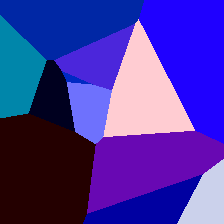 |
| 39 | common iguana, iguana, Iguana iguana | 0.00743414 | |
| 37 | box turtle, box tortoise | 0.00725935 | |
| 130 | flamingo | 0.00724208 | |
| 360 | otter | 0.00720238 | |
| 126 | isopod | 0.00695479 | |
| 161 | basset, basset hound | 0.00690897 | 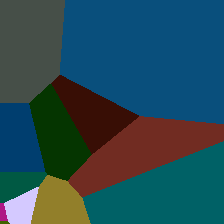 |
| 308 | fly | 0.00683068 | |
| 366 | gorilla, Gorilla gorilla | 0.00674036 | |
| 294 | brown bear, bruin, Ursus arctos | 0.00658812 | |
| 187 | Yorkshire terrier | 0.00638782 | |
| 181 | Bedlington terrier | 0.00636773 |  |
| 242 | boxer | 0.0062123 | |
| 258 | Samoyed, Samoyede | 0.0058925 | |
| 122 | American lobster, Northern lobster, Maine lobster, Homarus americanus | 0.00580847 | |
| 182 | Border terrier | 0.00576148 | |
| 172 | whippet | 0.00554357 | |
| 356 | weasel | 0.00553877 | |
| 123 | spiny lobster, langouste, rock lobster, crawfish, crayfish, sea crawfish | 0.00552031 | |
| 194 | Dandie Dinmont, Dandie Dinmont terrier | 0.00524911 | |
| 318 | lacewing, lacewing fly | 0.00523819 | |
| 352 | impala, Aepyceros melampus | 0.00520867 | |
| 10 | brambling, Fringilla montifringilla | 0.0050587 | |
| 340 | zebra | 0.00500745 | |
| 98 | red-breasted merganser, Mergus serrator | 0.00499831 | |
| 184 | Irish terrier | 0.00487197 | |
| 302 | ground beetle, carabid beetle | 0.00479474 | |
| 124 | crayfish, crawfish, crawdad, crawdaddy | 0.00468624 | |
| 220 | Sussex spaniel | 0.00410838 | |
| 217 | English springer, English springer spaniel | 0.00400625 | |
| 26 | common newt, Triturus vulgaris | 0.00399692 | |
| 53 | ringneck snake, ring-necked snake, ring snake | 0.00385979 | |
| 211 | vizsla, Hungarian pointer | 0.00374768 | |
| 24 | great grey owl, great gray owl, Strix nebulosa | 0.00374656 | |
| 260 | chow, chow chow | 0.00368963 | |
| 291 | lion, king of beasts, Panthera leo | 0.00364774 | |
| 355 | llama | 0.00361509 | |
| 322 | ringlet, ringlet butterfly | 0.00351114 | |
| 173 | Ibizan hound, Ibizan Podenco | 0.00330164 | |
| 210 | German short-haired pointer | 0.0032291 | |
| 226 | briard | 0.00318324 | 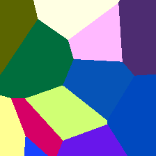 |
| 72 | black and gold garden spider, Argiope aurantia | 0.00318132 | |
| 367 | chimpanzee, chimp, Pan troglodytes | 0.00314768 | |
| 314 | cockroach, roach | 0.00307253 | |
| 193 | Australian terrier | 0.00304976 | |
| 106 | wombat | 0.00293203 | |
| 349 | bighorn, bighorn sheep, cimarron, Rocky Mountain bighorn, Rocky Mountain sheep, Ovis canadensis | 0.00290042 | |
| 175 | otterhound, otter hound | 0.00283539 | |
| 174 | Norwegian elkhound, elkhound | 0.00282638 | |
| 0 | tench, Tinca tinca | 0.00281471 | |
| 162 | beagle | 0.00280811 | |
| 290 | jaguar, panther, Panthera onca, Felis onca | 0.00277886 | |
| 239 | Bernese mountain dog | 0.00276024 | |
| 241 | EntleBucher | 0.00267802 | |
| 48 | Komodo dragon, Komodo lizard, dragon lizard, giant lizard, Varanus komodoensis | 0.00267782 | |
| 202 | soft-coated wheaten terrier | 0.00263298 | |
| 159 | Rhodesian ridgeback | 0.00252021 | |
| 77 | wolf spider, hunting spider | 0.00248671 | |
| 332 | Angora, Angora rabbit | 0.00244969 | |
| 261 | keeshond | 0.00239581 | |
| 153 | Maltese dog, Maltese terrier, Maltese | 0.00235397 | |
| 131 | little blue heron, Egretta caerulea | 0.00231587 | |
| 164 | bluetick | 0.00227277 | |
| 280 | grey fox, gray fox, Urocyon cinereoargenteus | 0.00226813 | |
| 200 | Tibetan terrier, chrysanthemum dog | 0.00226765 | |
| 278 | kit fox, Vulpes macrotis | 0.00225523 | |
| 270 | white wolf, Arctic wolf, Canis lupus tundrarum | 0.00224159 | |
| 249 | malamute, malemute, Alaskan malamute | 0.00218215 | |
| 293 | cheetah, chetah, Acinonyx jubatus | 0.00192479 | |
| 222 | kuvasz | 0.00190847 | |
| 250 | Siberian husky | 0.001892 | |
| 105 | koala, koala bear, kangaroo bear, native bear, Phascolarctos cinereus | 0.0018818 | |
| 36 | terrapin | 0.00184055 | |
| 229 | Old English sheepdog, bobtail | 0.00182475 | |
| 231 | collie | 0.00182306 | |
| 201 | silky terrier, Sydney silky | 0.00181375 | |
| 251 | dalmatian, coach dog, carriage dog | 0.00179241 | |
| 166 | Walker hound, Walker foxhound | 0.00172307 | |
| 74 | garden spider, Aranea diademata | 0.00165487 | |
| 188 | wire-haired fox terrier | 0.00164456 |  |
| 9 | ostrich, Struthio camelus | 0.00163738 | |
| 243 | bull mastiff | 0.00163289 | |
| 272 | coyote, prairie wolf, brush wolf, Canis latrans | 0.00162238 | |
| 232 | Border collie | 0.00157701 | |
| 87 | African grey, African gray, Psittacus erithacus | 0.00157581 | |
| 49 | African crocodile, Nile crocodile, Crocodylus niloticus | 0.00156886 | |
| 363 | armadillo | 0.00154337 | |
| 275 | African hunting dog, hyena dog, Cape hunting dog, Lycaon pictus | 0.00152653 | |
| 156 | Blenheim spaniel | 0.00150557 | |
| 125 | hermit crab | 0.00134902 | |
| 78 | tick | 0.00134132 | |
| 28 | spotted salamander, Ambystoma maculatum | 0.00130743 | |
| 169 | borzoi, Russian wolfhound | 0.00129593 | |
| 154 | Pekinese, Pekingese, Peke | 0.00128618 | |
| 61 | boa constrictor, Constrictor constrictor | 0.00128594 | |
| 139 | ruddy turnstone, Arenaria interpres | 0.00127789 | |
| 359 | black-footed ferret, ferret, Mustela nigripes | 0.00126464 | |
| 289 | snow leopard, ounce, Panthera uncia | 0.00123085 | |
| 155 | Shih-Tzu | 0.00119641 | |
| 337 | beaver | 0.00119191 | |
| 192 | cairn, cairn terrier | 0.00119004 | |
| 157 | papillon | 0.00117847 | |
| 32 | tailed frog, bell toad, ribbed toad, tailed toad, Ascaphus trui | 0.00115154 | |
| 335 | fox squirrel, eastern fox squirrel, Sciurus niger | 0.00113778 | 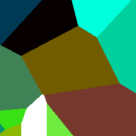 |
| 212 | English setter | 0.00113631 | |
| 334 | porcupine, hedgehog | 0.00110921 | |
| 83 | prairie chicken, prairie grouse, prairie fowl | 0.00108404 | |
| 52 | thunder snake, worm snake, Carphophis amoenus | 0.00105745 | |
| 353 | gazelle | 0.00105633 | |
| 185 | Norfolk terrier | 0.00103702 | |
| 279 | Arctic fox, white fox, Alopex lagopus | 0.00103257 | |
| 273 | dingo, warrigal, warragal, Canis dingo | 0.00102371 | |
| 228 | komondor | 0.00101839 | |
| 365 | orangutan, orang, orangutang, Pongo pygmaeus | 0.000982584 | |
| 207 | golden retriever | 0.000979616 | |
| 257 | Great Pyrenees | 0.000936485 | |
| 331 | hare | 0.000911639 | |
| 42 | agama | 0.000903287 | |
| 138 | bustard | 0.000866632 | |
| 56 | king snake, kingsnake | 0.000838543 |  |
| 66 | horned viper, cerastes, sand viper, horned asp, Cerastes cornutus | 0.00076945 | |
| 330 | wood rabbit, cottontail, cottontail rabbit | 0.000765815 | |
| 305 | dung beetle | 0.000745477 |  |
| 263 | Pembroke, Pembroke Welsh corgi | 0.000702564 | |
| 50 | American alligator, Alligator mississipiensis | 0.000694238 | |
| 152 | Japanese spaniel | 0.000683746 | |
| 247 | Saint Bernard, St Bernard | 0.000681286 | |
| 358 | polecat, fitch, foulmart, foumart, Mustela putorius | 0.00066971 | |
| 230 | Shetland sheepdog, Shetland sheep dog, Shetland | 0.000648407 | |
| 215 | Brittany spaniel | 0.000633209 | |
| 104 | wallaby, brush kangaroo | 0.000602818 | |
| 218 | Welsh springer spaniel | 0.000581405 |  |
| 191 | Airedale, Airedale terrier | 0.00055977 | |
| 73 | barn spider, Araneus cavaticus | 0.000535637 | |
| 54 | hognose snake, puff adder, sand viper | 0.000517409 | |
| 35 | mud turtle | 0.000476847 | |
| 86 | partridge | 0.000457782 | |
| 25 | European fire salamander, Salamandra salamandra | 0.000447873 | |
| 45 | Gila monster, Heloderma suspectum | 0.000409463 | |
| 140 | red-backed sandpiper, dunlin, Erolia alpina | 0.000398669 | |
| 79 | centipede | 0.000398025 | |
| 299 | meerkat, mierkat | 0.000379817 | |
| 27 | eft | 0.0003132 | |
| 30 | bullfrog, Rana catesbeiana | 0.000266078 | |
| 58 | water snake | 0.000240827 | |
| 142 | dowitcher | 0.000237572 | |
| 362 | badger | 0.00021035 | |
| 167 | English foxhound | 0.000193956 | |
| 63 | Indian cobra, Naja naja | 0.000192939 | |
| 292 | tiger, Panthera tigris | 0.000177314 | 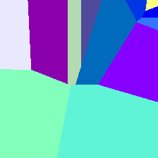 |
| 118 | Dungeness crab, Cancer magister | 0.000164244 |  |
| 102 | echidna, spiny anteater, anteater | 0.000160042 | |
| 119 | rock crab, Cancer irroratus | 0.000139907 | |
| 62 | rock python, rock snake, Python sebae | 0.000113727 | |
| 116 | chiton, coat-of-mail shell, sea cradle, polyplacophore | 0.000105965 | |
| 274 | dhole, Cuon alpinus | 0.000100923 |  |
| 271 | red wolf, maned wolf, Canis rufus, Canis niger | 0.0000943386 | |
| 68 | sidewinder, horned rattlesnake, Crotalus cerastes | 0.0000877118 | |
| 336 | marmot | 0.0000855224 | |
| 57 | garter snake, grass snake | 0.0000440208 | |
| 67 | diamondback, diamondback rattlesnake, Crotalus adamanteus | 0.0000421424 | |
| 298 | mongoose | 0.0000416455 | |
| 41 | whiptail, whiptail lizard | 0.0000399042 | |
| 44 | alligator lizard | 0.0000301 | |